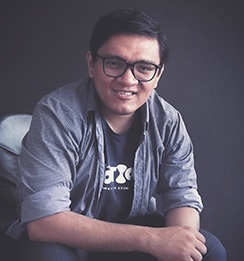

CV Omar Pacheco
Motiongraphic 3D/2D
Postproducción
Animador Gráfico 3D/2D con más de 7 años de carrera y con experiencia en Posproducción de video.
Educación
Diseño Gráfico
Estudio de 3 años de la Licenciatura

Profecional
Animador 3d/2d y Posproductor
2015-2020 Canal 21
Co y Instrutor de River Motion Estudio
2017-2018 River Motion Studio
Instructor de Producción Audiovisual
2017-Actualidad Academia PCS Internacional
Otros
Más de 10 cursos impartidos en temas de Produccion Audiovisual y Animacion con After Effects
Charla sobre Animación para TV, en la Semana del Diseñador de la Universidad Tecnólogica
Redes Sociales
Behance
Instagram